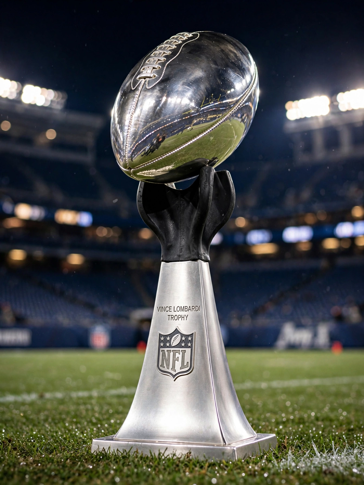

From Wikipedia, the free encyclopedia
| Super Bowl | |
|---|---|
 The Vince Lombardi Trophy, a silver football atop a kicking tee, held before a packed stadium | |
| First played | 15 January 1967 (Super Bowl I) |
| League | National Football League (NFL) |
| Most wins | Pittsburgh Steelers, New England Patriots (6) |
| Current champions | Philadelphia Eagles (Super Bowl LIX, 2025) |
The Super Bowl is the annual league championship game of the National Football League (NFL) of the United States. It has served as the final game of every NFL season since 1966, replacing the NFL Championship Game. The game pits the champion of the National Football Conference (NFC) against the champion of the American Football Conference (AFC) and is played on the second Sunday in February. The winner receives the Vince Lombardi Trophy, named after the Green Bay Packers coach who won the first two editions.
The Super Bowl is consistently the most-watched television broadcast in the United States each year and one of the most-watched sporting events worldwide; its halftime show is a major pop-culture event, and its advertising slots are the most expensive on television.
| Game | Date | Winner | Score | Runner-up |
|---|---|---|---|---|
| LV | 7 Feb 2021 | Tampa Bay Buccaneers | 31–9 | Kansas City Chiefs |
| LVI | 13 Feb 2022 | Los Angeles Rams | 23–20 | Cincinnati Bengals |
| LVII | 12 Feb 2023 | Kansas City Chiefs | 38–35 | Philadelphia Eagles |
| LVIII | 11 Feb 2024 | Kansas City Chiefs | 25–22 (OT) | San Francisco 49ers |
| LIX | 9 Feb 2025 | Philadelphia Eagles | 40–22 | Kansas City Chiefs |
The New England Patriots and Pittsburgh Steelers share the record of six wins; the Patriots, led by coach Bill Belichick and quarterback Tom Brady, appeared in eleven Super Bowls and won six between 2002 and 2019. Super Bowl LI (2017) saw the Patriots overcome a 28–3 deficit against Atlanta, the largest comeback in the game's history. The 1972 Miami Dolphins remain the only team to complete a perfect season, sealed by Super Bowl VII.
Categories: Super Bowl | National Football League playoffs | Recurring sporting events established in 1967